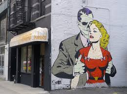
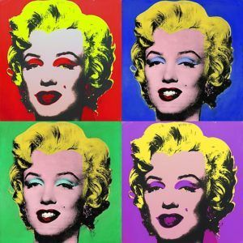
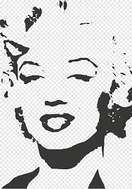
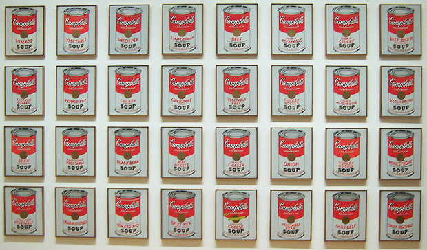
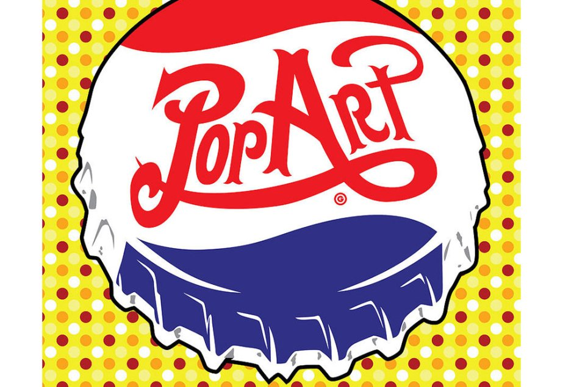

La Revolución del Color y la Cultura de Masas
El Pop Art nació en los años 50 y revolucionó la manera de entender el arte. Inspirado en la cultura popular, la publicidad y los medios de comunicación, convirtió objetos cotidianos en íconos visuales. Con colores vibrantes, repetición y estética gráfica, rompió los límites entre el arte y el consumo masivo, dejando una influencia que continúa presente en el diseño contemporáneo.




